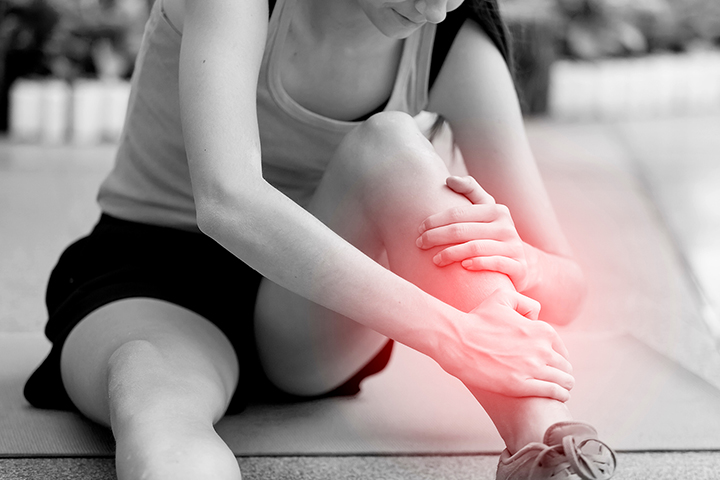

Como evitar a canelite durante períodos intensos de treino
Estratégias utilizadas por treinadores e fisioterapeutas.
Ler artigo da Nike Run
Estratégias utilizadas por treinadores e fisioterapeutas.
Ler artigo da Nike RunExercícios essenciais para ganhar estabilidade, prevenir lesões e correr com mais eficiência.
Ler artigo da Red BullEntenda as causas desse desconforto comum e veja o que pode ajudar a preveni-lo durante a corrida.
Ler artigo da YoPROO combustível certo pode fazer diferença na sua corrida. Neste artigo, o Runna aborda quais alimentos e bebidas podem ajudar a fornecer energia antes do treino, além de explicar como o momento da refeição influencia o desempenho e o conforto durante a corrida.
Ler artigo do RunnaA alimentação após a corrida desempenha um papel fundamental na recuperação do organismo. Neste artigo, a On Running aborda como carboidratos, proteínas e hidratação contribuem para a reposição de energia e a recuperação muscular, além de sugerir alimentos que podem ajudar corredores a se recuperarem melhor após os treinos.
Ler artigo da On Running
Embora a famosa regra dos 2 litros por dia seja
amplamente conhecida, especialistas da Harvard Health
explicam que a necessidade de hidratação varia de
pessoa para pessoa. Fatores como temperatura ambiente,
nível de atividade física e quantidade de líquidos
obtidos através da alimentação influenciam diretamente
a quantidade ideal de água.